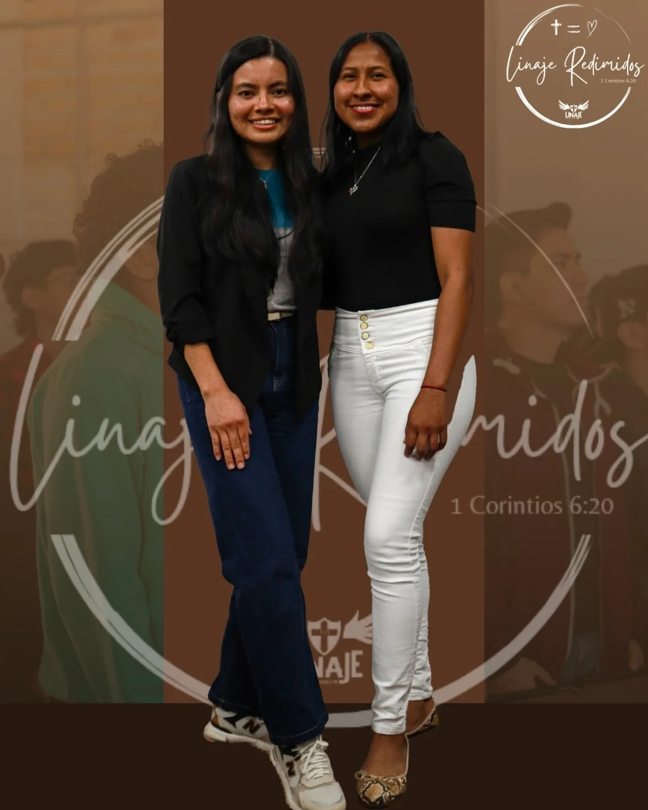

Redimidos
"Habéis sido comprados por precio; glorificad, pues, a Dios."

"Habéis sido comprados por precio; glorificad, pues, a Dios."

"Comprados por precio."
1 CORINTIOS 6:20
Redimidos es recordar — cada día — que Su sangre nos compró y Su amor nos sostiene. No vivimos para nosotras: vivimos para quien dio Su vida por nosotras.
Aquí celebramos la gracia que nos hace libres y nos enseñamos a caminar dignas de ese precio.
Descripción completa, propósito y testimonios del grupo.
Aquí irán los nombres y una breve presentación de las líderes del grupo.
Collage con fotos del grupo reunido, retiros y momentos especiales.
Ven, conócenos un sábado y forma parte de esta familia.
Escríbenos en Instagram Ver otros grupos